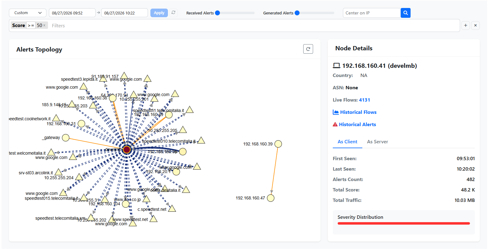

График оповещений
Вместо традиционного табличного представления оповещения о потоке, этот график позволяет визуально изучить, как оповещения подключены между хостами, что значительно упрощает выявление закономерностей, таких как попытки перебора, устаревшие версии TLS/SSH, периодические потоки, возможный трафик C2, ботнеты и подобные проблемы, просто взглянув на как оповещения распространяются и распространяются по сети.
Примечание
Эта функция доступна в лицензии Enterprise L.

График оповещений
Структура графа
На графике представлены все хосты, участвующие в заданном временном диапазоне. оповещения потока и оповещения, соединяющие их:
Каждый узел представляет хост:
а треугольник это удаленный хост
а круг является локальным хостом
Каждый край представляет собой предупреждение со стрелкой, указывающей от от отправителя (клиента потока) к цели (серверу потока) оповещения.
Это позволяет легко обнаружить хабы, т. е. ответственные за это хосты за создание или получение непропорционально большого количества предупреждений по сравнению к rest сети, а также следить за появлением оповещения на одном хост мог вызвать дополнительные оповещения на других хостах.
Цветовая информация
Цвета обеспечивают немедленный обзор серьезности графика:
Края: светло-желтый указывает на низкое количество предупреждений между двумя хостами, а оранжевый/красный указывает на большое количество предупреждений.
Узлы: чем более красный узел, тем выше его показатель оповещения, т.е. тем больше он генерировал или получал оповещений. Каждая проблема, обнаруженная в поток дает оценку от 0 до 150, а оповещение о потоке может быть состоит из нескольких задач, поэтому общий балл хоста представляет собой сумму все проблемы, которые на это влияют.
Как использовать график оповещений
Один клик на узле, чтобы показать подробную информацию о хосте (IP, Страна, Автономная система) на боковой панели вместе с кнопкой быстрого доступа. ссылки на прямые потоки, исторические потоки и исторические потоки этого хоста. Оповещения для выбранного временного диапазона.
Двойной щелчок на узле, чтобы отфильтровать весь шум и показать только оповещения, касающиеся этого конкретного хоста.
Щелчок по узлу также выделяет его взрыв radius, то есть все исходящие от него пути, что позволяет быстро увидеть, как оповещения могут распространились, начиная с этого хоста. В настоящее время это аппроксимации, поскольку полностью причинная реконструкция дополнительно требуют учета временного измерения.
Предварительные требования к лицензии
График оповещений визуализирует исторические оповещения о потоках, хранящиеся в ClickHouse, используя потоки, собранные непосредственно ntopng или экспортированные к нему от nProbe. Эта функция требует ntopng Предприятие L (или выше) или nEdge Enterprise L (или выше) вместе с ClickHouse включено, как описано в ClickHouse Таймсерии.
После включения доступ к графику оповещений можно получить с левой боковой панели. под Оповещения -> График оповещений.
Дополнительную информацию об этой функции, а также примеры снимков экрана можно получить можно найти в нашем блоге: https://www.ntop.org/introducing-ntopng-alerts-graph-visualize-security-events-like-never-before/